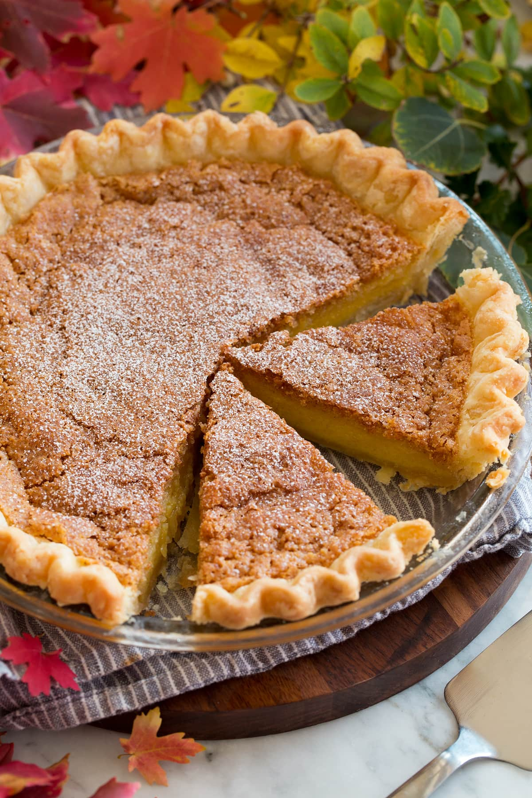

Chess Pie

Southern chess pie is quite ancient. It's a delicious, sweet, rich
meal. My grandma gave me this recipe, which she got from her
grandmother. This, especially with whipped cream, will make you
think you died and went to heaven. Find the orginal recipe at
AllRecipes.
Ingredients
- ½ cup butter
- 2 cups white sugar
- 1 teaspoon vanilla extract
- 4 large eggs
- ¼ cup evaporated milk
- 1 tablespoon cornmeal
- 1 tablespoon distilled white vinegar
- 1 (9 inch) unbaked pie shell
Steps
- Preheat the oven to 425 degrees F (220 degrees C).
-
Mix butter, sugar, and vanilla together in a large bowl. Mix in
eggs, then stir in evaporated milk, cornmeal, and vinegar until
smooth. Pour into pie shell.
-
Bake in the preheated oven for 10 minutes, then reduce heat to
300 degrees F (150 degrees C) and continue to bake for 40
minutes. Let cool before cutting.
- Enjoy!
Back Home